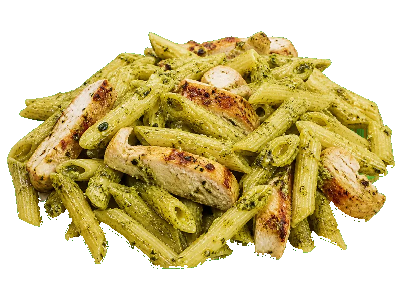

Dania z makaronu
Makaron z pesto i kurczakiem
Makaron z pesto i kurczakiem: 13 g białka, 195 kcal, 16 g węglowodanów i 9 g tłuszczu na 100 g. Kategoria: Dania z makaronu.
Kalorie195 kcalna 100 g
Białko / proteiny13 g
Węglowodany16 g
Tłuszcz9 g
Cena (szac.)~3,59 złza 100 g
Ceny zaktualizowano: maj 2026 (szacunek — ceny w popularnych supermarketach)
Porcja: porcja (320g)
| Kalorie | 624 kcal |
|---|---|
| Białko | 41.6 g |
| Węglowodany | 51.2 g |
| Tłuszcz | 28.8 g |
| Cena (szac.) | ~11,49 zł |
Szczegółowe składniki odżywcze na 100 g
| Wartość energetyczna (kalorie) | 195 kcal |
|---|---|
| Białko (proteiny) | 13 g |
| Węglowodany | 16 g |
| Tłuszcz | 9 g |
| Tłuszcze nasycone | 2.5 g |
| Tłuszcze nienasycone | 6.5 g |
| Witaminy i minerały | Tiamina (B1), Żelazo, Magnez |
| Współczynnik kcal / 1 g białka | 15.0 |
| Cena produktu (szac. za 100 g) | ~3,59 zł |
| Cena za 100 g białka (szac.) | ~27,62 zł |